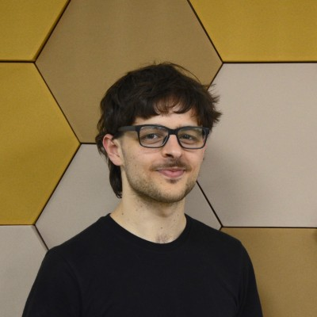
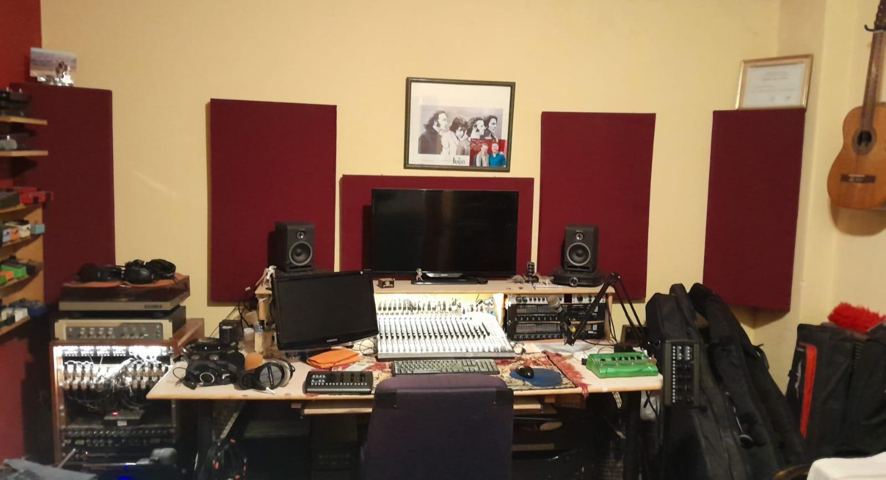
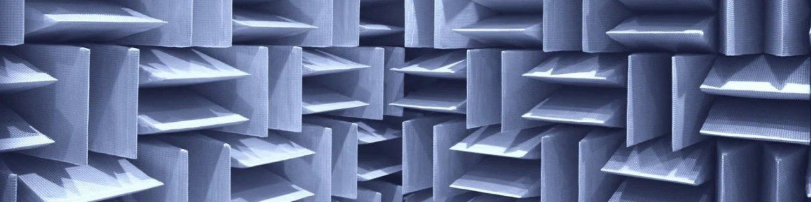
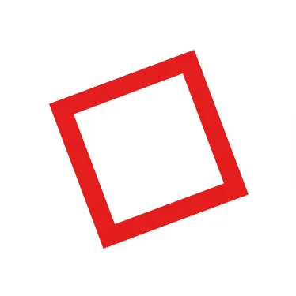

Pedro Fernandez Ridano
Consultor Acústico | Técnico en Electrónica de Audio | Tesista de Ingeniería de Sonido (UNTREF)
Bienvenido a mi portfolio. Especializado en diagnóstico y diseño electroacústico, restauración de equipos de alta fidelidad vintage y simulaciones acústicas arquitectónicas. Trabajo en la intersección de la acústica arquitectónica, la electrónica a nivel componente y el desarrollo de software. Mi experiencia abarca desde el modelado 3D y la simulación de recintos, hasta la investigación de nuevos materiales acústicos y la calibración precisa de hardware de audio.
Proyectos
Acústica Arquitectónica

Se realizó el diagnóstico acústico integral del Control Room evaluando respuestas al impulso (RIR) multipunto y barrido continuo:
- Distribución Modal: Detección de resonancia axial crítica en torno a los 84 Hz debida a la geometría casi cuadrada ($3,91 \times 3,96\text{ m}$).
- Variabilidad Espacial: Cuantificación mediante descriptores MSV y VSA (70–200 Hz) evidenciando asimetría acústica marcada por la distribución del mobiliario.
- Fase Mínima y DSP: Análisis de Exceso de Retardo de Grupo (EGD) para determinar los límites de la ecualización digital frente a reflexiones tempranas de consola y pantalla.


Diagnóstico y evaluación de acondicionamiento acústico de un gimnasioSe evaluó el estado del "Antes" y del "Después" centrando el análisis en dos parámetros clave (según norma BS EN ISO 3382-2:2008):
- Tiempo de Reverberación (RT60): Se logró reducirlo significativamente, alcanzando el valor objetivo de 1.45 s establecido por la norma DIN 18041:2016 para la categoría "Sport" y para un volumen de 2000 m³, prácticamente en todo el rango de frecuencias de interés.
- Índice de Definición (D50): Se consiguió duplicar este valor en el rango de 1.5 kHz a 4 kHz, superando el límite del 50% sugerido por Kuttruff.

Junto con mi equipo, estuve a cargo del diagnóstico, del diseño y de la instalación de las soluciones acústicas.
El objetivo fue aumentar la Inteligibilidad de la Palabra de cinco espacios dentro de un piso de oficinas, disminuyendo sobretodo el Tiempo de Reverberación.
- Tiempo de Reverberación (RT60): Se logró reducirlo significativamente, alcanzando el valor objetivo de 0.8 s establecido por el Well Building Standard, prácticamente en todo el rango de frecuencias de interés.
- Índice de Definición (D50): Se consiguió aumentar en un 30% este valor en el rango de 250 Hz a 4 kHz, superando el límite sugerido por Kuttruff.

Investigación y selección de sustratos orgánicos:
- Caracterización de mezclas utilizando sustratos específicos y de gran accesibilidad local: paja de trigo, algodón y yerba mate.
Equipamiento y Ensayos:
- Construcción de incubadora basada en Arduino para el crecimiento y desarrollo del micelio.
- Ensayos con tubos de impedancia para medir y validar las propiedades de absorción acústica de los compuestos.
Electroacústica

- Medición de Impedancia eléctrica y de los parámetros de Thiele-Small de los transductores reciclados.
- Simulación del sistema en Basta!
- Diseño del sistema en CAD.
- Montaje y construcción en MDF.
- Medición de la respuesta en frecuencia del sistema con ARTA + python.

- Diseño del sistema electroacústico en CAD.
- Medición de Impedancia eléctrica y de los parámetros de Thiele-Small de los transductores reciclados.
- Simulación del sistema en Basta!
- Montaje y construcción en MDF.
- Medición de la respuesta en frecuencia y directividad con ARTA.
- Diseño del crossover mediante VituixCAD.
Experiencia Profesional
Consultor acústico — New Concept Co.
Septiembre 2025 – Presente
- Mediciones acústicas in situ y análisis de datos para la evaluación y acondicionamiento de espacios.
- Asesoramiento técnico y comercial a clientes para la implementación de soluciones acústicas con paneles de PET.
Técnico electrónico — Yaeltex Custom MIDI Controllers
Agosto 2024 – Enero 2025
- Armado de controladores MIDI y testeo inicial.
Profesor particular de Física y Matemática — Freelance
Agosto 2021 – Presente
- Organización de técnicas de estudio y tutorías.
Ayudante de Cátedra — UNTREF
Marzo 2024 – Diciembre 2025
- Laboratorio de Electrónica 1 e Introd. a la Acústica.
Herramientas y Software
- Acústica y Medición: Smaart V.7, VituixCAD, REW, Aurora, ARTA, EASE 4.3.8, SketchUp.
- Desarrollo y Programación: Python (NumPy, SciPy, python-acoustics) para DSP y automatización; LaTeX para reportes técnicos.
- Hardware y Electrónica: Uso avanzado de osciloscopios, multímetros, y soldadura aplicada al diagnóstico de placas.
Contacto
Ubicación: Buenos Aires, Argentina